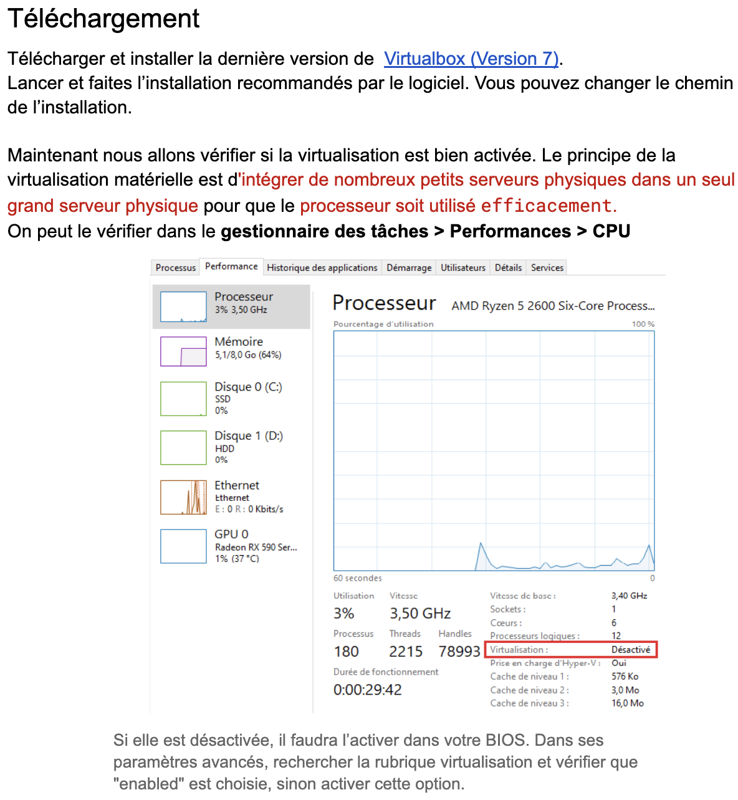
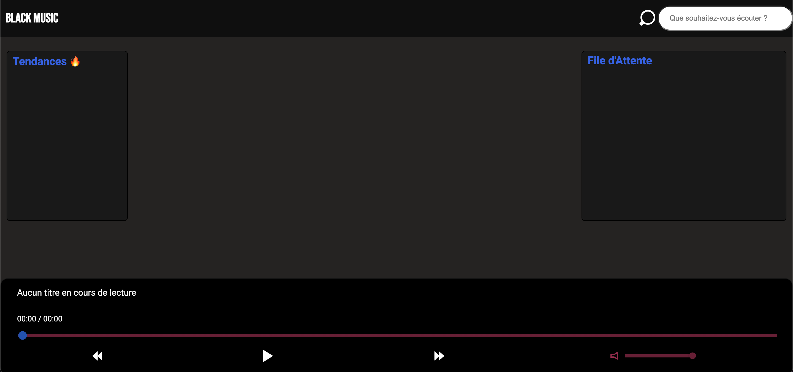

Machine Virtuelle
Lors de notre projet, nous avons mis en place un système d'exploitation en installant et configurant une machine virtuelle via l'application VirtualBox.
Nous avons choisi d'utiliser Debian, également connu sous le nom de Linux, comme système d'exploitation virtuel.
Dans cet environnement, nous avons soigneusement configuré divers outils de développement, notamment Java, afin de créer un environnement de développement
complet et fonctionnel pour nos besoins spécifiques.
Cette approche nous a permis de travailler de manière isolée et sécurisée, tout en bénéficiant de la flexibilité
et de la compatibilité offertes par une machine virtuelle.
En plus de l'installation et de la configuration du système d'exploitation Debian via VirtualBox, nous avons également élaboré un mode opératoire détaillé.
Ce guide fournissait des instructions pas à pas sur la manière d'installer la machine virtuelle, de configurer les paramètres nécessaires et d'installer les outils
de développement requis.

BlackMusic
Nous avons développé avec succès une application appelée BlackMusic en réponse à une demande client spécifique.
BlackMusic est un logiciel de recherche de musique qui s'inspire de la convivialité et de la fonctionnalité de Spotify.
Pour créer cette application, nous avons utilisé Docker, une plateforme de conteneurisation, qui a permis de lier harmonieusement nos différents langages informatiques.
Grâce à cette approche, nous avons pu offrir à notre client une application performante et stable, dotée d'une interface utilisateur intuitive et de fonctionnalités avancées pour la recherche et l'écoute de musique.
BlackMusic est l'aboutissement de notre engagement à répondre aux besoins de notre client et à fournir une solution innovante et personnalisée dans le domaine de la recherche musicale.
